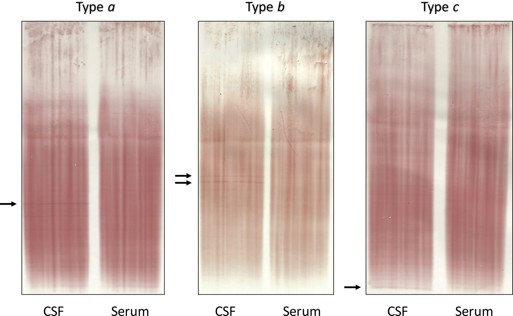

LCR e a pegadinha do conversivo
Duas crises na história ≠ EM se a RM não mostra lesão. O conversivo simula McDonald — só a imagem desmonta.
BOC IgG e κFLC
O líquor (LCR) adora cair em prova: padrão clássico = presença de bandas oligoclonais de IgG. Bandas oligoclonais de IgG não são patognomônicas, mas são bastante características da EM.
Critérios de McDonald atualizados (2025 citados) incluem também cadeias leves kappa no LCR, podendo substituir/complementar bandas oligoclonais (imunoglobulina tem cadeia leve). Dois marcadores: o que tradicionalmente cai é BOC IgG; atenção ao marcador de cadeias leves kappa “neste ano”.
κFLC (índice; cutoff frequentemente citado >6,1 na literatura dos critérios 2024) é intercambiável com BOC no McDonald 2024. O PCDT BR vigente opera com BOC IgG e não lista κFLC como marcador operacional SUS no trecho consultado. Mantém-se κFLC no núcleo com honestidade de versão; não se apaga nem se finge que já é lei SUS.
LCR não obrigatório
O líquor não é obrigatório. Obrigatórios no raciocínio prático apresentado: clínica que motiva + ressonância.
Substituto de tempo
O LCR não mostra disseminação no espaço (não localiza dois sítios). Serve como substituto / alternativa de disseminação no tempo quando não há história temporal clara nem imagem com cicatriz de lesão antiga. Especialmente útil nas formas progressivas (sem crises repetidas). Também pode servir como alternativa temporal nas formas surto-remissão, quando necessário. Para prova de acesso direto, a aposta principal é “o que o líquor da EM mostra”; o uso fino como substituto de tempo pesa mais em R+.
| Item | Papel |
|---|---|
| Bandas oligoclonais IgG | Característico (não patognomônico) |
| Cadeias leves kappa (citadas) | Marcador liquórico adicional (update) |
| Obrigatório? | Não — clínica + RM |
| Espaço | Não mostra |
| Tempo | Sim — substituto quando falta história/imagem temporal |
| Onde mais ajuda | Formas progressivas |
Conversivo simula McDonald
Pegadinha: véspera de carnaval — namorado termina → paciente perde a visão. Acaba o carnaval, namorado volta → visão volta. Na Páscoa, término definitivo → paciente fica sem andar. Diagnóstico não foi EM: foi transtorno conversivo / transtorno de sintomas neurológicos funcionais por causa psiquiátrica.
Por isso a RM
Pelo “jeito McDonald só clínico”, ela “preencheria” tempo (duas crises) e espaço (visão + marcha) — e não tinha EM. Por isso não se fecha EM só pela clínica: precisa de RM mostrando lesão desmielinizante.
| EM | Conversivo / funcional | |
|---|---|---|
| Tempo clínico | ≥2 surtos | Pode “parecer” ≥2 |
| Espaço clínico | ≥2 topografias | Pode “parecer” ≥2 |
| RM | Lesões desmielinizantes | Sem lesão desmielinizante |
| Decisão | Clínica + RM | Clínica + RM normal desmonta EM |
Resumo operacional
LCR ajuda tempo; conversivo engana tempo+espaço; RM desmonta.

Hegen H, Zinganell A, Auer M, Deisenhammer F. PLoS ONE 2019 · CC BY 4.0 · PLOS
As bandas que caem
As faixas no LCR ausentes no soro são as bandas oligoclonais — o achado liquórico clássico. Característico, não patognomônico; e não substitui a RM nem prova espaço.
Aplicar numa questão com distratores de coluna.
Quiz
Q1. Bandas oligoclonais de IgG no LCR:
Gabarito: B. BOC é característica, não patognomônica; o LCR não é obrigatório (clínica + RM).
(A) não fecha sozinha. (C) não prova espaço. (D) não substitui RM.
Q2. O LCR, no papel descrito, serve como:
Gabarito: B. LCR substitui tempo (não localiza sítios = não prova espaço).
(A) não mostra espaço. (C) não é critério de alta atividade. (D) Uhthoff é clínico.
Q3. História de duas “crises” ligadas a término de namoro, com RM sem lesão desmielinizante:
Gabarito: B. Tempo+espaço clínicos sem lesão → conversivo/funcional. A RM normal desmonta a EM.
(A) forçar McDonald sem imagem é o erro. (C)(D) perfis errados.
Por que se cai na A: erro mental de forçar McDonald só pela história.